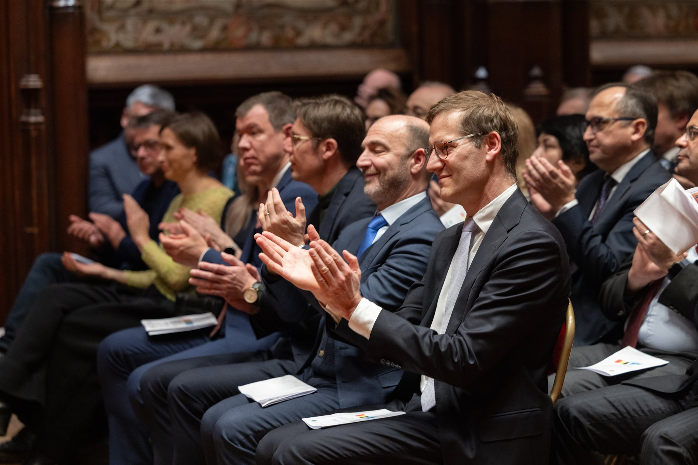
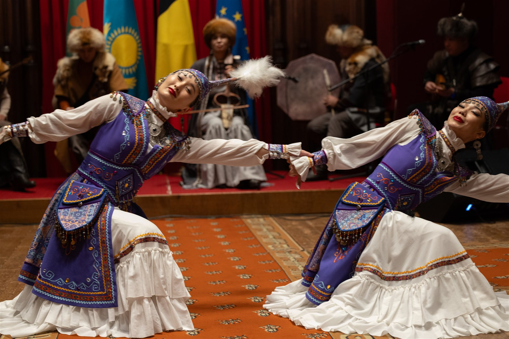
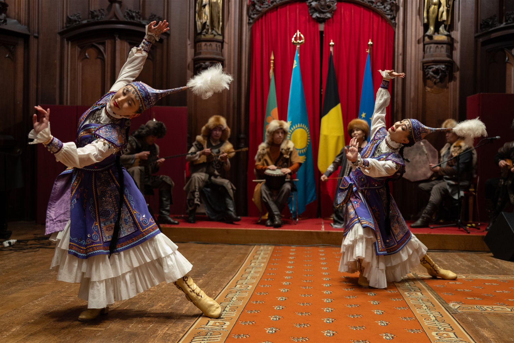
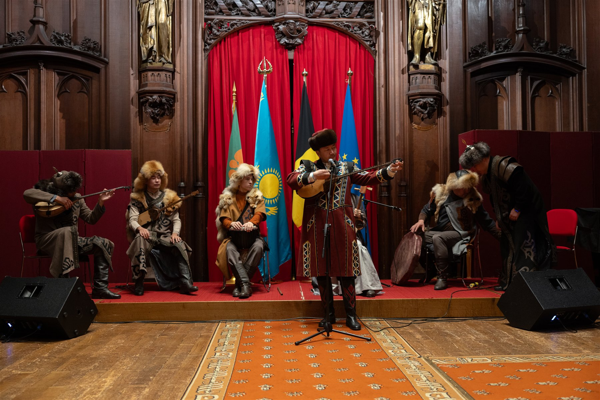
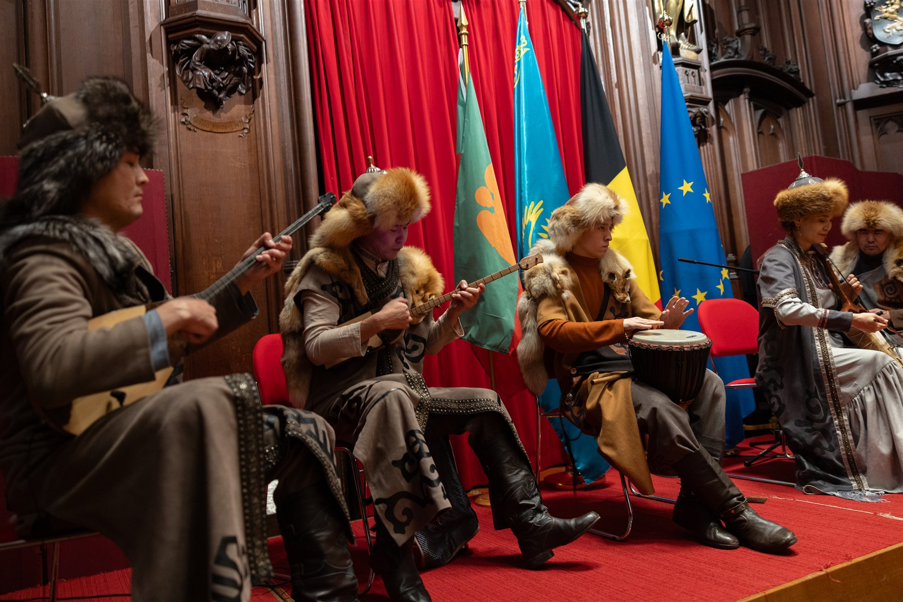
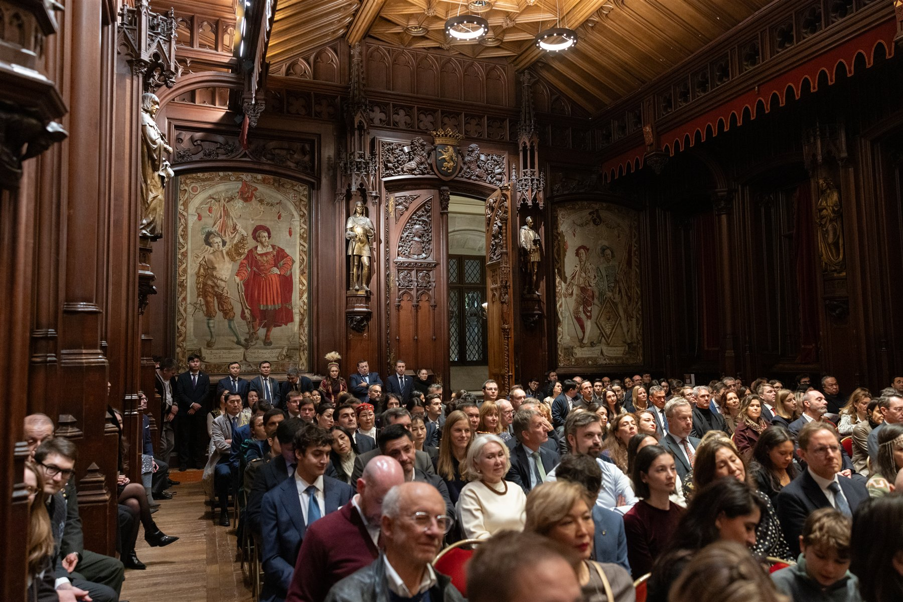
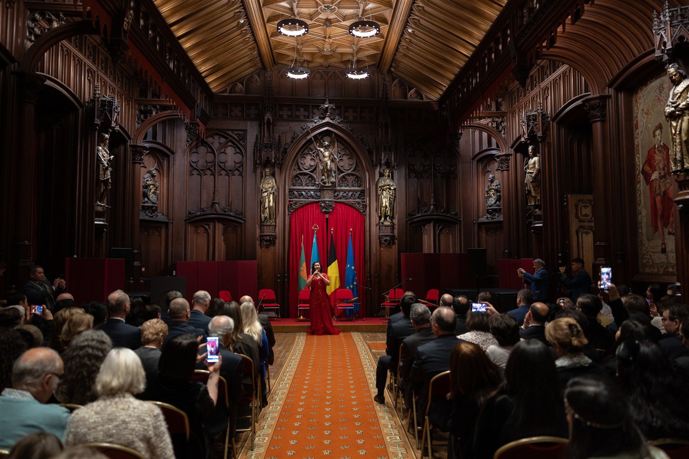

Shanyraq Fest Belgium
Shared traditions.
New connections.
Shanyraq Fest brings Kazakh music, dance, and hospitality to Belgium. These photographs capture the performers and the people who came together to celebrate.
From embroidered costumes and traditional instruments to applause shared across the hall, explore the details and moments that made this edition its own.

The festival in photographs
Moments to remember.
8 photographs












